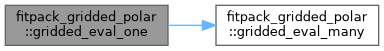
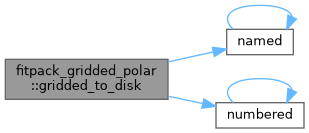
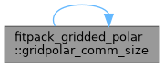
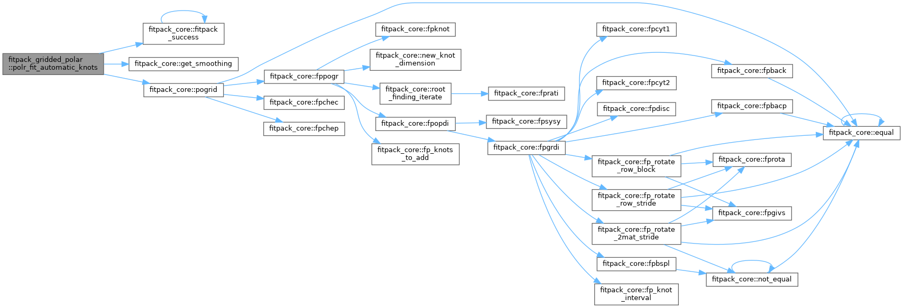
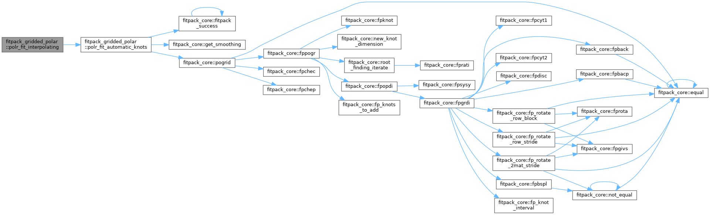
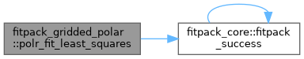
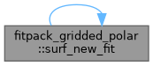
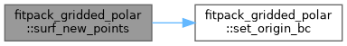

- Generated by
 1.13.2
1.13.2
|
fitpack
Modern Fortran library for curve and surface fitting with splines
|
OOP wrapper for bivariate spline fitting on a gridded polar disc. More...
Data Types | |
| interface | fitpack_grid_polar |
| Bicubic spline fitter for data on a gridded polar disc. More... | |
Functions/Subroutines | |
| integer function | polr_fit_least_squares (this, smoothing, reset_knots) |
| Fit a least-squares gridded polar surface with fixed knots. | |
| integer function | polr_fit_interpolating (this, reset_knots) |
| Fit an interpolating gridded polar surface ( \( s = 0 \)). | |
| integer function | polr_fit_automatic_knots (this, smoothing, keep_knots) |
| Fit a smoothing gridded polar surface with automatic knot placement. | |
| elemental subroutine | surf_destroy (this) |
| Destroy a gridded polar surface object and release all allocated memory. | |
| subroutine | surf_new_points (this, u, v, r, z, z0) |
| Load new gridded polar data and allocate workspace. | |
| type(fitpack_grid_polar) function | surf_new_from_points (u, v, r, z, z0, ierr) |
| Construct a gridded polar surface from data and perform a default fit. | |
| integer function | surf_new_fit (this, u, v, r, z, z0, smoothing) |
| Load new data and perform a fresh gridded polar fit. | |
| real(fp_real) function, dimension(size(v), size(u)) | gridded_eval_many (this, u, v, ierr) |
| Evaluate the gridded polar surface on a rectangular \( u \times v \) grid. | |
| real(fp_real) function | gridded_eval_one (this, u, v, ierr) |
| Evaluate the gridded polar surface at a single \( (u, v) \) point. | |
| subroutine | set_origin_bc (this, z0, exact, differentiable) |
| Configure origin boundary conditions for the gridded polar surface. | |
| subroutine | gridded_to_disk (this, filename) |
| Write gridded polar data to a text file. | |
| elemental integer(fp_size) function | gridpolar_comm_size (this) |
| Return the communication buffer size for the gridded polar surface. | |
| pure subroutine | gridpolar_comm_pack (this, buffer) |
| Pack gridded polar data into a communication buffer. | |
| pure subroutine | gridpolar_comm_expand (this, buffer) |
| Expand gridded polar data from a communication buffer. | |
OOP wrapper for bivariate spline fitting on a gridded polar disc.
Provides fitpack_grid_polar, a derived type for fitting bicubic splines to data sampled on a polar grid \( (u_i, v_j) \) over a disc of constant radius \( r \). The coordinate mapping is:
\[ x = u \, r \cos v, \quad y = u \, r \sin v, \quad 0 \leq u \leq 1, \ -\pi \leq v \leq \pi \]
Continuity constraints at the origin and optional specification of the function value \( z_0 = f(0,0) \) are supported. Uses the pogrid core routine.
|
private |
Evaluate the gridded polar surface on a rectangular \( u \times v \) grid.
Returns f(j,i) = \( s(u_i, v_j) \) in normalized polar coordinates.
|
private |
Evaluate the gridded polar surface at a single \( (u, v) \) point.

|
private |
Write gridded polar data to a text file.

|
private |
Expand gridded polar data from a communication buffer.
|
private |
Pack gridded polar data into a communication buffer.
|
private |
Return the communication buffer size for the gridded polar surface.

|
private |
Fit a smoothing gridded polar surface with automatic knot placement.
Uses the pogrid core routine. Origin continuity constraints and optional function value at the origin are configured via set_origin_BC.
Ensure we start with new knots (unless caller wants to keep them)

|
private |
Fit an interpolating gridded polar surface ( \( s = 0 \)).

|
private |
Fit a least-squares gridded polar surface with fixed knots.

|
private |
Configure origin boundary conditions for the gridded polar surface.
| [in,out] | this | The grid polar surface. |
| [in] | z0 | Optional function value at the origin. |
| [in] | exact | If .true., fit the origin value exactly. |
| [in] | differentiable | If .true., enforce \( C^1 \) continuity at the origin. |
|
private |
Destroy a gridded polar surface object and release all allocated memory.
|
private |
Load new data and perform a fresh gridded polar fit.

|
private |
Construct a gridded polar surface from data and perform a default fit.
|
private |
Load new gridded polar data and allocate workspace.
| [in,out] | this | The grid polar surface (destroyed and reinitialized). |
| [in] | u | Radial grid values \( u_i \in [0, 1] \). |
| [in] | v | Angular grid values \( v_j \in [-\pi, \pi] \). |
| [in] | r | Constant boundary radius. |
| [in] | z | Gridded function values z(j,i). |
| [in] | z0 | Optional function value at the origin. |
